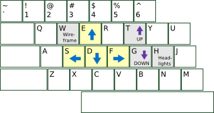
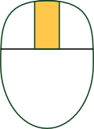
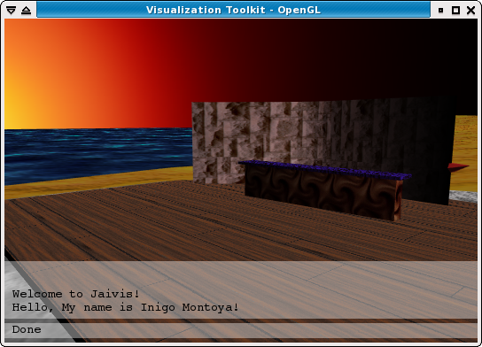
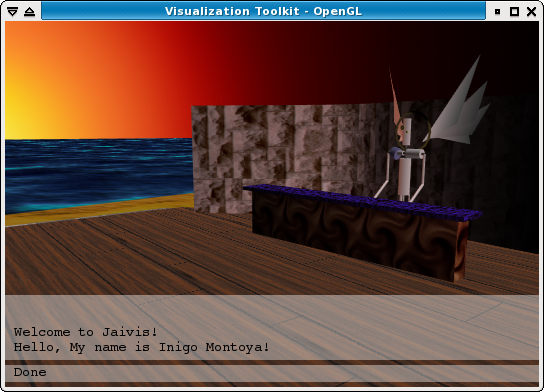

Jaivis requires:
You might need to change some pathnames. Edit this file:
jv/jvPaths.py
To launch Jaivis:
$ python jaivis.py VirtualWorldForPeople
You can move around inside Jaivis. Right now the movement is videogame-style:
|
Left hand on the keyboard to move: |
Press-and-hold the middle mouse button to look around: |
|  |  |
Jaivis is built on top of VTK (The Visualization Toolkit) which is built on top of OpenGL:
Another wrapper on top of VTK? Jaivis adds a couple things to VTK:
an animation loop and a custom interactor (via vtkRenderWindowInteractor()). This
allows you to move around inside of your visualization.
If you know Python and VTK, it's possible to create your own interactor. Jaivis
isn't married to any particular style of interaction.
There are three major interfaces:
Most of Jaivis's behavior is controlled through a Unix domain socket. I like to use "socat" to control Jaivis. For example:
$ socat READLINE UNIX-CONNECT:/tmp/jv-wazzathis should give you a nice, GNU-readline-style interface to Jaivis.
From socat, you can type commands to Jaivis:
> GET maps BeachSunset CompassRose
You can put text onto the 4-line On-Screen Display:
> POST osd Hello, My name is Inigo Montoya!
Let's load and remove some maps:
> REMOVE maps/BeachSunsetYou should see only the compass rose at the origin. Let's add the beach again:
> LOAD map BeachSunset Jaivis/1.0 200 OK
Loading a map twice should generate an error:
> LOAD map BeachSunset Map BeachSunset already exists.
Let's add a bar to the beach:
> LOAD map TheLaughingMan Jaivis/1.0 200 OK
Let's add a bartender:
> LOAD character jid:bartender@jabber.org race:MechAngel Jaivis/1.0 200 OKBy default, he's sitting at the origin, underneath the floor, so let's move him to the bar:
> MOVE characters/bartender@jabber.org x:2.2 y:0.2 z:2.3 >Note that he's facing away from the customers. By default, characters are created facing north. Let's turn him so that he's facing the customers:
> ROTATE characters/bartender@jabber.org theta:180 >
More stuff:
> GET characters username@jabber.org bartender@jabber.org > REMOVE characters/bartender@jabber.org >
A position can be specified when you first load a character. Let's put the bartender on the stage:
> LOAD character jid:bartender@jabber.org race:MechAngel x:4.5 y:-17.0 z:2.2
Using socat's READLINE interface, you can use the up-arrow to go back to previous commands. This makes it easier to tinker while making changes to your maps and avatars.
You use XML to describe your VTK pipelines. My goal is to follow VTK's naming conventions and structures as closely as possible in the file format. This is usually possible, but not always. (XML is a strict tree structure, whereas VTK is a little bit more flexible than that.)
Example XML file:
<VTKpipelines>
<Actor name="origin" SetColor="1, 0.3, 0.4">
<PolyDataMapper>
<SphereSource SetRadius="0.1"/>
</PolyDataMapper>
</Actor>
</VTKpipelines>
In the long-run, I'd like to make things much more general and abstract: